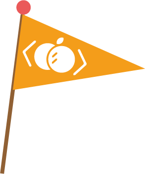

擔心 1／5
家長
孩子坐不住，線上會不會更放飛？
分心會被看見
線上每班 1:6–1:10 真人小班，輔導老師會巡看孩子的螢幕——一分心就會被看見、被拉回來。而且課堂不是聽講，是動手做出自己的專案，孩子有目標，就坐得住。
1:6–1:10 小班・老師巡看螢幕雙師制線上課程・真人老師一對一引導
因為這不是丟一支影片給孩子自己看。卡住按一下「我要發問」，真人老師會一對一連線、看著孩子的螢幕，帶他把問題想通——不限地區，海外也能上。
不是自己看影片・卡住有真人老師接手雙師制線上教室
01・直球回答
對線上課有疑慮很正常。疫情那幾年，大家都看過孩子「掛在鏡頭前放空」。橘子蘋果的線上課從 2019 年開始打磨，就是為了解決這些問題。
擔心 1／5
孩子坐不住，線上會不會更放飛？
分心會被看見
線上每班 1:6–1:10 真人小班，輔導老師會巡看孩子的螢幕——一分心就會被看見、被拉回來。而且課堂不是聽講，是動手做出自己的專案，孩子有目標，就坐得住。
1:6–1:10 小班・老師巡看螢幕擔心 2／5
看影片自學，能學得會嗎？
影片負責教，真人負責會
影片講師只負責「教得標準」——聽不懂，倒回去再看一次，這是實體課做不到的。學不學得會，靠的是真人輔導老師：卡關就按「我要發問」，老師依序一對一連線、看著螢幕引導孩子自己除錯，不是把答案給他。
雙師制：影片講師＋真人輔導老師擔心 3／5
沒有老師在旁邊，效果怎麼追蹤？
每週都有白紙黑字
每週上課的常態課程都有「每週學習報告」：每堂課後老師寫下今天學了什麼、孩子表現如何、下一步目標。家長每週看得到進度，不用猜、也不用陪課。
每週學習報告擔心 4／5
臨時有事、生病缺課怎麼辦？
缺一堂，接得回來
常態課程採彈性調課，開課前主動調課即可；選手班每期含 2 次補課；APCS、ITS、AI 思維課提供補課影片。缺一堂，不會就此跟不上。
彈性調課・補課制度擔心 5／5
家裡的電腦跑得動嗎？
一般家用電腦就能上
大多數課程一般家用電腦就能上（i3 或 M 系列以上、8GB 記憶體），加上麥克風與耳機即可；只有麥塊、Roblox 需要較高規格，課前顧問會逐一確認。平板、手機無法上正式課程（頑皮艾伯特除外）。
免費試聽＝順便測設備02・為什麼有效
橘子蘋果程式學苑的線上課程採「雙師教學」：影片講師提供可重複觀看的標準化教學，真人輔導老師會巡看孩子的螢幕；孩子卡住按「我要發問」，老師依序一對一連線、看著螢幕引導孩子自己找出錯誤。此模式適用於玩創系列、菁英系列與麥思數學。
影片講師示範觀念與作法。聽不懂？倒回去再看一次，不用怕跟不上進度。
每堂課都有要完成的專案進度，孩子邊做邊學，不是被動聽講。
老師會巡看孩子的螢幕；孩子卡住按「我要發問」，依序一對一連線引導、帶他自己找出錯誤——排隊時先繼續看影片，不空等。
完成當堂專案，孩子帶著「我做出來了」的成就感下課，這是持續學下去的動力。
誠實說明：APCS、ITS 檢定班與 AI 思維課採講師授課模式（非雙師），並提供補課影片；免費試聽時顧問會說明各課程的上課方式。
課綱相同——線上與實體用同一套課程體系與進度，選的是形式，不是內容。
住在宜蘭、花蓮、台東、彰化、南投、雲林等沒有實體教室的縣市，甚至旅居海外——線上班上的是同一套課綱、同一批師資，孩子不會因為住在哪裡而少學。外派、移居的家庭，孩子換了城市也能用中文接著學。想比較實體據點，可查看教學據點。
03・課程總覽
橘子蘋果的課程體系為 4 條主線（玩創 → 菁英 → 駭客 → 選手班）加上 3 套獨立模組，以下課程皆開設線上班，部分課程僅在線上開課。
國小低年級起的程式啟蒙——用孩子喜歡的世界當教室，建立序列、迴圈、條件等基礎觀念；各課程適齡見卡片。
幼齡程式啟蒙，遊戲化情境學基礎邏輯。
在 Minecraft 教育版的世界裡學程式邏輯。
與 AI 協作，打造自己的 Roblox 遊戲世界。
國小 4 年級以上——從圖形化走向文字程式的完整階梯；國中沒有基礎的孩子可直接從 Python 入門。
MIT 開發的圖形化程式，培養運算思維與邏輯。
從基礎語法到專案實作的文字程式第一步。
網頁互動程式設計，銜接更高階段的進階實作。
檢定與認證衝刺——以檢定成績與國際認證為目標，為升學備審累積具體成果。
大學程式設計先修檢測衝刺，程式解題訓練。
取得國際認可的資訊能力證明。
以競賽為目標的進階培訓，需程度評估。
不需程式先修——與主線並行的獨立課程，依孩子的興趣與需求單獨報名。
提示詞設計、問題拆解與創作整合，AI 時代的數位素養。
用邏輯思維方法學數學，雙師教學。
想看各課程的完整介紹與學習地圖？前往課程總覽 →
04・怎麼開始
試聽就在線上進行，順便確認家中設備沒問題。完全免費。
孩子在試聽課就做出自己的小專案；課後顧問說明適合的課程與費用，不強迫報名。
已有基礎的孩子做程度測驗，分到相應階段，不重學、不硬跳。
平日晚間與週末皆有班表；開課後每週學習報告追蹤進度。
05・真實成果
橘子蘋果程式學苑 Google 評論 4.9 顆星、超過 2,200 則家長評價；線上課程與實體共用同一套課程體系，學員成果從啟蒙作品一路累積到 APCS 檢定與升學備審。
從線上課堂一路練到全國檢定。APCS 成績是目前大學資訊相關科系升學的重要參考，線上學員拿得到一樣的成果。
旅居美國、越南、波蘭華沙等地的台灣家庭，孩子透過同一套線上課程、以中文持續學習程式。課程以影片為主、輔導在台灣時間的固定時段，外派或移居的家庭，孩子換了城市也不用中斷學習。
線上與實體班家庭的真實回饋，點擊即可觀看。
機構認證與獎項
06・常見問題
一堂課的時間，孩子會做出自己的第一個作品。你會看到他專注的樣子——線上課適不適合，看過就知道。
或直接來電：(02) 7709-8229（線上課程專線 週一至週五 13:00–21:00／週六日 10:00–17:00）
